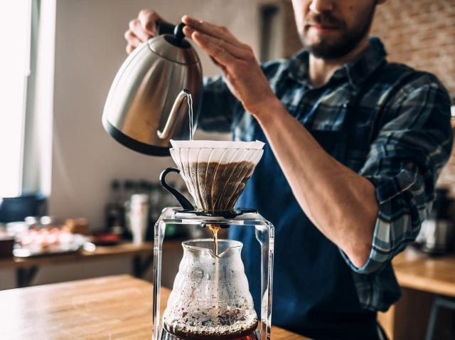

Cómo preparar un buen café en casa
Publicado el 10 de septiembre de 2026

Selecciona un buen café
Escoge café fresco y revisa su fecha de elaboración. También puedes probar diferentes variedades hasta encontrar el sabor que prefieras.
Utiliza agua limpia
El agua influye directamente en el resultado. Utiliza agua limpia y evita que hierva durante demasiado tiempo, porque puede afectar el sabor.
Controla las cantidades
Mantén una proporción equilibrada entre café y agua. Puedes ajustar las cantidades según prefieras un sabor más suave o más intenso.
Sirve inmediatamente
Una vez terminada la preparación, sirve el café para disfrutar mejor su aroma y temperatura.
Volver al blog